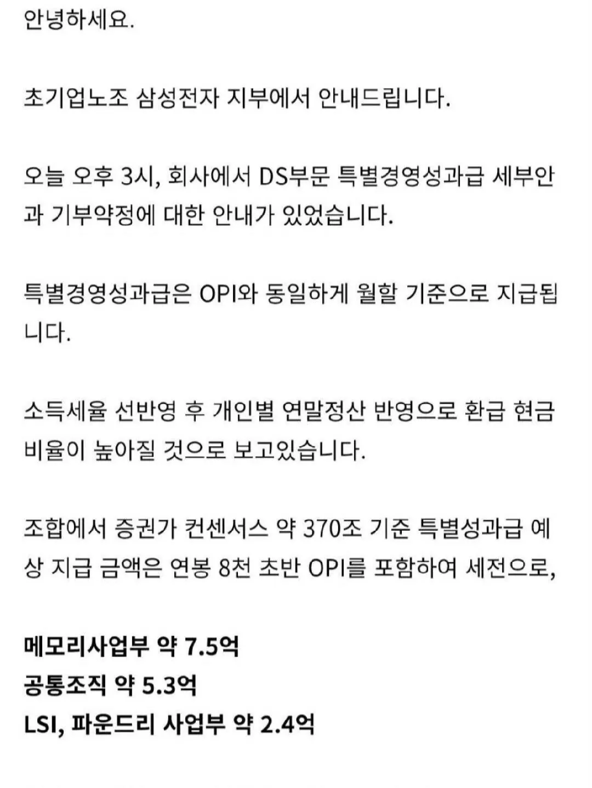

아무리 노력 운이다 인정하려해도 이거 배 아픈건 사람 본성 맞지?
삼성전자 진짜 부럽고 축하하고 배아프고 막 그래..

아무리 노력 운이다 인정하려해도 이거 배 아픈건 사람 본성 맞지?
삼성전자 진짜 부럽고 축하하고 배아프고 막 그래..
환급현금 저거보고그러는거임? 저거는 회사서 개개인 소득세 특정하기 어려우니 45%구간 기준으로 뗀단거고 이거로 환급받는건 해봐야 천만원언저리밖에 안됨
그냥 현금줌에서 병신이라는걸 너무 늦게 알았다 미안하다. 아 걍 뭘 모르고 지껄이는 놈인가?
맛있겠다
5년안에 다 퇴사하겠네
돈을 저렇게 계속주면 기를쓰고 다닐거 같은데ㅋㅋ
ㄹㅇ 저렇게 받으면 욕심 더 생겨서 버티지ㅋㅋㅋㅋ
년초에 주식 펌핑하고 성과금이야기나올때
여직원들은 출산휴가만 쓰고 복귀한다썰도있었음 ㅋㅋ
개인적으론 받을만 하다고 생각함
아물론 삼성을 없애는 목적으로 운영되고있는 삼성노조는 안받았으면좋겠음
없앤다고 한 사람은 퇴출당해서 괜찮다네요~
노조가 따온 성과금을 노조보고 받지말라 이지랄ㅋㅋㅋㅋ
삼성없앤다 드립친애는 dx고 축출당함
훌륭하네
7억5천이면 월실수령이 3400만원 ㄷㄷ 세금만 1년에 3억 3천을 내야되네 ㅋㅋㅋ
이제 시작이라는거임
씻.... 삼전 안가고 지금 회사왔는데..... 젠장젠장젠장
연구조직 받는건 찬성임. 근데 고졸 생산직 + 문과 HR 재무부서까지 다같이 받는게 존나 괘씸함
그럼 니가 기여도 말 안나오게 칼같이 측정해보셈..
그럼 문과 부서들은 보너스를 어떨때 받음?
회사가 연구부서여도 돈을 안버는 조직이니 안준다네요~
괘씸 ㅇㅈㄹ ㅋㅋ
개웃기네 ㅋㅋ 니가뭔데
븅신새끼ㅋㅋㅋㅋㅋ
ㅋㅋㅋㅋㅋ 연구조직은 뭐? 연구원도 핵심 몇명 빼고는 다 갈아낄수 있는 부품인거 똑같은데 생산직 스탭이랑 뭐가 다른줄 아냐?
븅신 니가뭔데 ㅋㅋ
ㅋㅋㅋㅋ괘씸하대 ㅋㅋㅋㅋㅋ ㅋㅋ ㅋㅋ ㅋㅋ ㅋㅋㅋㅋ
배가 왜 아픈거임 ?? 니가 삼성에서 근무하다 퇴사한것도 아니자나
공산주의 감성이지 뭐... 능력 있어서 더 잘버는데 시끌시끌하네
걍 부러운거지
로또 당첨자 보는 느낌
그래 ㅅㅂ 성과급 좋다 이거야...
주주환원은 안하냐고!!!!
삼전 주가도 올리도..
와.....부럽지만 난 삼전갈만큼 열심히 안살았으니 뭐...ㅋㅋㅋ 폭딸이나 쳐야지
뒤지네 ㄷㄷ
와…
세금만 3억이 넘어가겠네
열심히 살껄 ㅅㅂ
시발 개쩌네
저런거 하나하나 부러워하면 어떻게 사냐
다 각자 지인생 사는거지
저걸 그 주거지원 삥땅친 븅신들은 못받는단거지?
공통>LSI 인건 좀 신기한듯? 고급인력들 다 미국 가건 유럽 가건 말건 너네로 돈 벌 생각 없다는건가
LSI가 박사들 비율도 높은 고학력자 조직이긴 한데
이미 빅테크 발사대 된지 오래라 갈놈은 다 갔다고 판단하는거 같음
세금으로 절반 떼야겠네
능력이 좋은건 맞지만 운이 좋은게 너무 현타옴.. 대학원 졸업할때 취업안되는 애들이 삼전이나 하닉갔었는데
비트코인 산사람하고 비슷한거지 뭐
세상은 대부분 운이지
다른사람 피해둔것고아니고
돈 많이쓰면 나머지한테도 도움될거니
ㅈ같을수는 있는데
기업만 괜찮다고하면
국가 전체로보면 돈이 풀려서 내수가
돌아가는데 영향을 주니까 좋은듯
세금으로 다 걷자고 하는건 더 최악이니까
난 남에돈 왜 배 아파하는지 이해 안 감
내꺼 아닌데 왜 아까워 그게
opi1(2~3천) 현금 주고 나머지 주식(opi2) 아님?